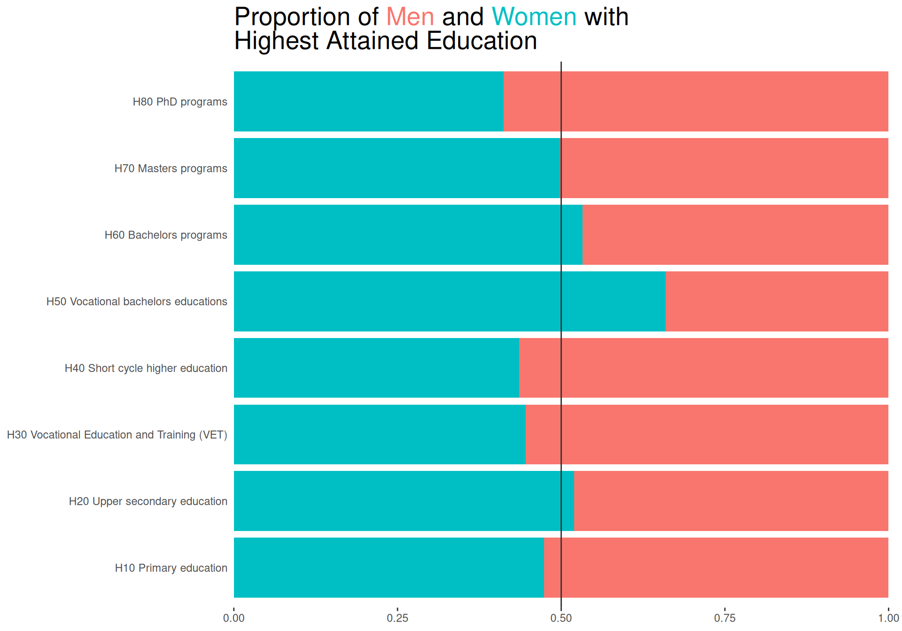
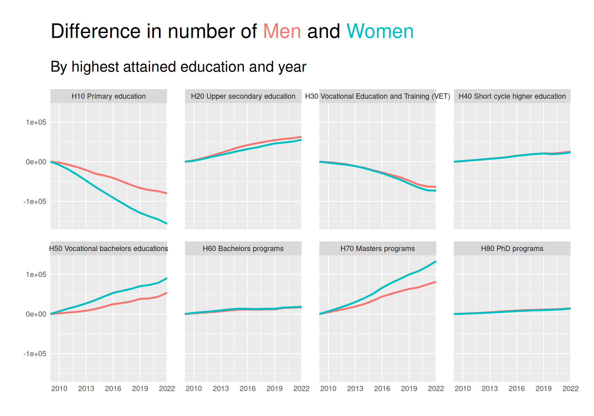
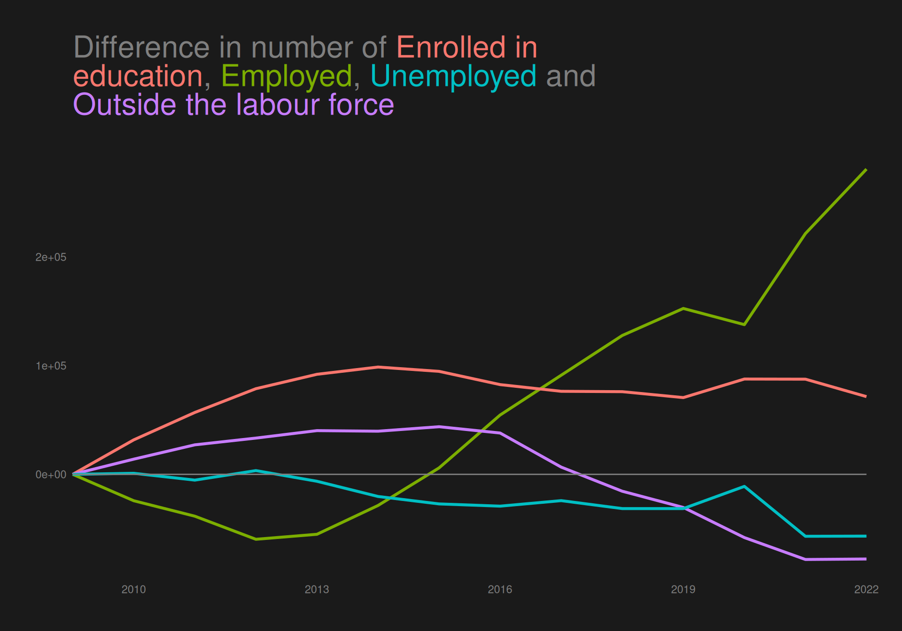

The data set is a csv file, dk_highest_education.csv, extracted from table HFUDD16 (note that you can choose “English” in the upper right corner) as part of Highest Education Attained on statistikbanken. This is a publicly available data base of data sets generated by Danmarks Statistik, which is the central authority of Danish statistics, who collects, processes and publishes statistics about the Danish society.
The data has counts of the highest attained education of Danish residents based on a number of factors. We can read the csv into R and quickly give it some meaningful column names.
sex socioeconomic_status highest_education age 2009 2010
1 Men Enrolled in education H10 Primary education 15-19 years 140633 146660
2 Men Enrolled in education H10 Primary education 20-24 years 21355 24397
3 Men Enrolled in education H10 Primary education 25-29 years 4150 4708
4 Men Enrolled in education H10 Primary education 30-34 years 1830 1853
5 Men Enrolled in education H10 Primary education 35-39 years 976 957
6 Men Enrolled in education H10 Primary education 40-44 years 650 620
2011 2012 2013 2014 2015 2016 2017 2018 2019 2020 2021
1 149409 150766 149242 147672 145439 144336 144044 144411 142423 145685 145535
2 25725 26379 26752 25828 24709 23457 22675 22082 21695 23137 22183
3 5317 6010 6464 6992 6444 5930 5606 5606 5554 5633 5685
4 1919 2072 2300 2380 2372 2372 2291 2181 2169 2133 2232
5 1049 1099 1110 1075 1001 1063 995 1016 1030 1048 1078
6 616 619 703 594 624 576 507 496 498 547 638
2022
1 144946
2 19279
3 4931
4 2126
5 1050
6 594
Each row contains a count of Danish residents in years 2009-2022 based on sex, socioeconomic status, highest attained education and age groups of 5 years from 15-19 to 65-69. We deselect the first 2 columns as they contain the same value for all observations.
Data in long format
We create a long version of data, where years are in a single column and the counts are in another column.
The proportion/distribution of men and women in different groups of highest attained education
The distribution of highest attained education across age groups (mostly with focus on people from age 25 and up since 15-24 year olds are quite restricted in what they “have had time to achieve” in regards to education)
The distribution of socioeconomic status
across time (stratified by highest attained education)
across different age groups
Distribution of men and women in highest attained education
To investigate the distribution of men and women for each group of highest attained education, we create a simple bar plot.
We choose a bar plot because the use of position/length/area are effective visual channels according to Kieran Healy as mentioned in section 1.5 of Data Visualization: A Practical Introduction.
According to Wilke in section 20.2 of Fundamentals of Data Visualization, we should design figures without legends whenever possible, so we use the ggtext package to color our title with HTML. We first create some helper function to enable us to do so. Specifically, we create a function get_default_colors which will set a default color scheme if no colors are specified. We also create a function color_html_label to color a single word with HTML and a function color_html_label_instring to color and wrap and entire string with line breaks.
We then create the bar plot on our summarised data using geom_col, using position = "fill" as we are interested in the proportion of men and women and not the absolute counts. We use coord_flip() to flip the axes, so we can read the labels more easily. We also use scale_y_continuous(expand = expansion(mult = c(0, .05))) to remove some space from the bars to the axis labels. Using the description in the title, we can also remove the axis titles. Finally, we superimpose a line at 50% to make it easier to see whether there is an overrepresentation of men or women.
sexBar <-function(data = sexHighedSum, colors =NULL) { colors <-get_default_colors(data = data, colvar ="sex", colors = colors) title <-"Proportion of Men and Women with Highest Attained Education" colored_title <-color_html_label_instring( title, colors,width =35 )ggplot(data, aes(x = highest_education, y = n, fill = sex)) +geom_col(position ="fill") +coord_flip() +geom_hline(yintercept =0.5, color ="grey20") +scale_y_continuous(expand =expansion(mult =c(0, .01))) +scale_fill_manual(values = colors) +labs(title = colored_title) +theme(plot.title = ggtext::element_markdown(size =20, ),plot.background=element_rect(colour=NA, fill="white"),panel.background=element_rect(colour=NA,fill="white"),axis.title =element_blank(),axis.ticks.y =element_blank(),legend.position ="none" )}sexBar()

Answering questions of interest
The plot clearly shows for which groups there are more men and for which there are more women.
It is however a bit hard to see by how much the proportions differ from 50%.
Bar plot with annotated labels
To create a plot with annotated labels, we use a low-level solution of creating the plot exactly how we want it with grid. We also use gridtext to ensure that if a user includes values in the title that is a value in data for the colored variable, the word is colored accordingly in the title.
library(grid)library(gridtext)
We create a function that creates a grob with a bar and label.
Using this function, we then create a function that creates bars and labels within each group defined by facetvar. We use grid.layout to create a layout with the number of rows equal to the number of unique values in facetvar. We then create a grob for each group and draw it in the correct position. We also add the facet labels and a title.
To investigate the distribution of men and women within different groups of highest attrained education across years, we create a small multiples line plot. Small multiples as described by Wilke is a good way to use the strong visual channel of position to show subsets of data.
We continue to color the title according to the guidance by Wilke to avoid legends when possible.
We create class_to_scalefun, which is used to scale the x-axis no matter the class of it. We scale the x-axis to ensure we have no expansion on the left-hand side to ensure closer proximity between the axis text and the data.
We can see from the plot that there is a downward trend in number of people with “Primary education” as their highest attained education, especially for women. The same is true for category H30. On the other hand, especially people with a Masters seems to have risen quite a bit, with women overtaking men.
It is however a bit hard to judge how much of a difference is present, and for some of the less populated groups it is hard to see what the trend is.
Showing a difference
As we would like to try and satisfy the The principle of proportional ink as described by Wilke, we take his advice to not use scales = "free_y" and instead plot the difference in response. We can do this by subtracting the first value of each group from all values in that group.
I implemented us being able to show a difference in a variable by simply adding diff_ to the beginning of the variable name.
facet_line(yvar ="diff_count")

This plot makes is easier to see that there has actually been a visible increase in both H20 and H50 in addition to H70. The decrease in H10 and H30 is also more visible.
The plot also much clearer showcases that many more women than men have obtained H50 and H70 as their highest education.
We can, however, still not see the difference very well for the low-frequent groups H40, H60 and H80. We try to solve this below:
Imbedding “scales free” lines in background
Though showing the difference in response as above helped see trends over time better than showing absolute values, some groups are still so low-frequent that it’s hard to see differences.
For this reason, we use gggrid::grid_panel to embed a line plot for each panel that shows the data on a scale native to the range of that subset of data. To ensure it is clear that this is not the “real” data, we make sure to make the lines less wide, we make them slightly transparent, and we desaturate the colors a bit.
From this plot, we can now see that as for H50 and H70, more women than men have gotten H60 as their highest attained education since 2009. The reverse is not visible for H40 and H80, where the increase has been greater for men than women.
Adding direct labelling and more contrast
The CRAP design principles described in “The Non-Designer’s Design Book” by Robin Williams proposes some design principles to follow when creating visualizations.
Here we use especially contrast and repetition when creating a plot with an all black background, where we color groups to create a pre-attentive popout effect that is even greater than usual by having a stark contrast to the black. We also use repetition by coloring everything else in the plot with the same grey nuance and using the same font across all text. We also use alignment by aligning the title and the text in the facet labels to the left.
We use the gggrid package to create direct labelling within facets.
Helper functions
We
Create an add_label function to add the facet labels to the plot using gggrid::grid_panel when creating the ggplot.
Create direct_facet_labels which uses add_label to add the labels to the plot and remove the default strips from facet_wrap completely.
Create a theme_black() function to create a black background with no grid lines and make all text the same color.
As mentioned above, this plot has a better contrast, making for a more powerful preattentive popout effect, and the direct labelling ensures closer proximity between facet groups labels and the data.
Though it does not directly give us any new information that is not visible from the previous plot, but I do think this plot makes the differences appear clearer.
Distribution of socioeconomic status across time
We create a line plot showing the change of people in each group of socioeconomic status across time. We create the line plot simply by specifying relevant arguments to the facet_line function we made earlier.
facet_line(colvar ="socioeconomic_status",facetvar =NULL,subtitle ="",yvar ="diff_count") +theme_black() +geom_hline(yintercept =0, color ="grey50")

The plot shows an increase in people “enrolled in education” and “employed” from 2009 to 2022, while both “outside the labour force” and “unemplpyed” has decreased across the period.
We do however see quite a decline in number emplyed from year 2009 until about 2012, where it begins to rise again, reaching about the same level as in 2009 in 2015.
We would like to highlight the groups “employed” and “unemployed” in the plot to create a preattentive popout effect.
Highlighting (un)employment
We want to highlight these categories both by desaturating the colors of the other categories as well as making the lines thicker for the highlighted categories.
Find summarised data with only categories that we want to highlight.
The plot clearly highlights the categories “employed” and “unemployed”, ensuring that readers will see these categories first.
Note that I created a manual color scheme for the socioeconomic status variable using a sample of favorite R colors that are nicely placed on the color wheel to play nicely together. Thus, now I want to investigate the effect of this on people with color blindness.
Color blindness
Below we try to use the colorspace::deutan() function to see what the plot would look like for a person with deutan color blindness using the color palette that I defined, and using the default from ggplot.
Note that we assume a severity of deutan color blindness of 0.6
We see that though the colors are not quite as distinguishable for a person with deutan color blindness, the plots using both color schemes are reasonably readable for a person with CVD.
Animation
In addition to desaturating colors and creating thicker lines for the highlighted categories, we can use animation to create an even more effective preattentive popout effect.
To do so, we use gganimate, where we make sure to rename the x variable in the subset of data with the highlighted categories. In this way, we can use gganimate::transition_reveal on this new variable, and in this way keep a static image that the animation “plays on top of”.
We can investigate the distribution of socioeconomic status across time stratified by highest attained education by simply specifying a facetvar in the facet_line function.
As before, we want to highlight (un)employment, so we create a new summarised data set with only the categories we want to highlight.
We see that for all other categories than H10 and H30, the difference in number of “Employed” has been consistently greater than the difference of “unemployed”.
Distribution of socioeconomic status across age groups
We can quickly also take a look at socioeconomic status across age groups by using the function bar_ratios that was created earlier when we wanted to look at the proportion of men and women in different groups of highest attained education.
Not surprisingly, the number of “Enrolled in education” is monotonically decreasing with age. The reverse relationship might have been expected for “Outside the labour force”, however, this is not entirely true as groups 20-24, 25-29 and 30-34 all have a larger proportion of people “Outside the labour force” than age groups 35-39, 40-44 and 45-49. Onwards from there, we do however see a drastic monotonic increase as we near retirement age (which was recently upped to 70 years in Denmark).
Looking at (un)employment, we see that rates become increasingly favorable when increasing the age group from 25-29 all the way up to 45-49. The age groups 50-54 and 55-59 still have very low unemployment rates, while the employment rate is starting to go down due to the increasing amount of people “Outside the labour force”. The same can be said about the 2 last age groups, just in more dramatic fashion.
Distribution of highest attained education across age groups
We create a data set that is filtered by only having age groups starting from age 25.
We can create plots using the functions facet_line and bar_ratios that were already created for answering other questions.
We note, however, that using a qualitative color scheme with too many categories makes it difficult to decode the categories efficiently. Here we have 8 categories, which can be argued to be too many. At least according to Wilke who notes in section 19.1 of his Data visualization book that “As a rule of thumb, qualitative color scales work best when there are three to five different categories that need to be colored. Once we reach eight to ten different categories or more, the task of matching colors to categories becomes too burdensome to be useful, even if the colors remain sufficiently different to be distinguishable in principle.”.
However, there are ways to alleviate these problems.
Using an “ordering” of colors.
An “ordering” of colors can help alleviate the problem. This is natural in the bar plot we create by having the colors in the same order of positions in the title and in the plot.
We extract the categories to create the title and color it like we did for socioeconomic status.
In a line plot, there is not natural “ordering” by colors; the order is determined by the response values in data. Thus, having 8 colored categories in such a plot can make it difficult to decode data values.
A way to alleviate this is by adding interactivity. We do so by using the ggplotly() function in the plotly package. To create a readable line plot for the user, we
use the age.lower variable as the x-axis variable to not crowd labels on the x-axis
rename variables to make them more meaningful in the hovering tooltips created by ggplotly() and select specific aesthetics to show in the tooltips
double the hoverdistance by adding hoverdistance = 40 in the plotly::layout() function
add a legend to enable interactive filtering of groups
highed_agef_rename <- highed_agef %>%rename("Age lower limit"= age.lower,"Difference from age group 25-29"= count,"Highest attained education"= highest_education)p <-facet_line(data = highed_agef_rename,colvar ="Highest attained education",facetvar =NULL,xvar ="Age lower limit",yvar ="diff_Difference from age group 25-29",ncol =2,title.width =70) +theme_black() +theme(legend.position ="bottom",legend.background =element_rect(fill =NA),legend.text =element_text(colour ="grey50")) +labs(colour ="", title ="Difference in number with Highest Attained Education")plotly::ggplotly(p, tooltip =c("x", "y", "colour")) %>% plotly::layout(title =list(subtitle =list(text ="By lower limit of age groups" ) ),hoverdistance =40 )
Answering questions of interest
Besides the group 25-29 years, “H10 Primary education” is steadily increasing with age, suggesting that newer generations have an increasing level of education. The most dramatic reverse relationship is for “H70 Masters programs”, which is steadily decreasing with age. In general we see the relationship that groups become smaller with increased age for all educations from level H40 to H80 (except age group 25-29 who are still in process of finishing degrees) as well as for “H20 Upper secondary education”. This means that younger people’s highest attained education generally has a higher level than older groups, whereas older groups consists of a majority of non-academic skilled educations.
Overall summary
Distribution of men and women across highest attained education
To investigate the proportion of men and women within each group of highest attained education, we create bar plots. We can quite easily create such a plot with ggplot2, but we make use of the grid package to create a plot with direct labelling giving the exact percentages.
We note that men are a majority of those with “H10 Primary education”, “H30 Vocational education and training (VET)” and “H40 Short cycle higher education”, while more women have highest attained educations of “H50 Vocational bachelors educations” and “H60 Bachelors programs”. For “H70 Masters programs”, the proportion of men and women is almost exactly 50/50, but for “H80 PhD programs” almost 60% are men.
Across time
To investigate the distribution from years 2009-2022 we create a small multiples line plot. To better be able to see the time trend while still fulfilling the principle of proportional ink we look at the response as the difference from year 2009. To further enhance the visibility of differences for low-frequent groups, we add a line plot to each facet with the data plotted on a scale native to the range of that subset of data. Finally, we create a dark themed plot with CRAP design principles in mind with direct labelling for the groups to ensure a greater contrast between the background and the colors in the plot and thus a greater preattentive popout effect. The direct labelling ensures repitition by using the same font and color as well as alignment and proximity by labelling subsets of data close to the lines visualising that subset.
We see that a big decrease in the group of “H10 Primary education” for both men and women, though most drastic for women. The same is true for “H30 Vocational education and training (VET)”, while all other groups have seen increases. Women have had a bigger increase than men in both “H50 Vocational bachelors educations”, “H60 Bachelors programs” and “H70 Masters programs”, while also having almost the same increase as men for “H80 PhD programs”.
Distribution of socioeconomic status
Across time
To showcase this, we create a simple line plot using the functions we created for answering questions and gender distributions.
The plot shows an increase in people “enrolled in education” and “employed” from 2009 to 2022, while both “outside the labour force” and “unemplpyed” has decreased across the period. We do however see quite a decline in number employed from year 2009 until about 2012, where it begins to rise again, reaching about the same level as in 2009 in 2015.
We wish to highlight this fact and do so by highlighting the lines of “Employed” and “Unemployed” by increasing the linewidth and desaturating the colors of other categories. To further highlight these categories, we create an animation that draws the lines for the highlighted categories. Since socioeconomic status has 4 levels and we only make use of colour as an aesthetic mapping/visual channel (i.e. we do not make use of redundant coding), we check if someone with color-vision-deficiency would be able to read the plot.
Stratified by highest attained education
We create a facetted version of the same line plot, facetted by highest attained education. Most notably, we see that for all other categories than “H10 Primary education” and “H30 Vocational education and training (VET)”, the number of “Employed” has been on a steady increase.
Across age groups
Expectedly, the proportion of people enrolled in education declines steadily with age, while those outside the labor force show a less predictable pattern; rising in early adulthood, dipping in mid-life, then increasing sharply approaching retirement. (Un)employment rates improve from ages 25 to 49. Older groups maintain low unemployment while employment rates drop as more exit the labor force.
Distribution of highest attained education across age groups
Investigating this, we have many categories of highest attained education as well as age groups, which means a lot of information should be embedded in a single plot. We choose to color by highest attained education and alleviate the potential problem of using many colors by using an “ordering” of colors in a bar plot, where the colors are in the same order in the title and in the plot. We also create a line plot, where we add interactivity to ensure that you can hover over the lines to see the values of each group as well as filter by group using the legend.
Educational attainment generally increases in younger age groups, with more individuals completing higher education levels like master’s programs. In contrast, older age groups tend to have lower educational levels, primarily non-academic or vocational training. The 25–29 age group is an exception, as many are still completing their studies.